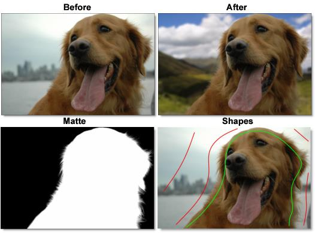

Keying and Matting
Using proprietary matte extraction techniques, the zMatte and Power Matte nodes are capable of extracting almost any object in an image quickly and simply even if you are dealing with fine hair detail, smoke, or reflections. They are easy to use, yet provide the needed tools when faced with good, bad, or ugly shots.
Keying Features
• Interactive image matting tool capable of extracting almost any object in an image
• DV/HD deartifacting
• Multiple matte creation
• Color suppression
• Sophisticated matte manipulation
• Generate mattes without blue or green screens